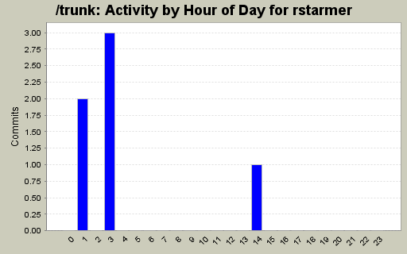
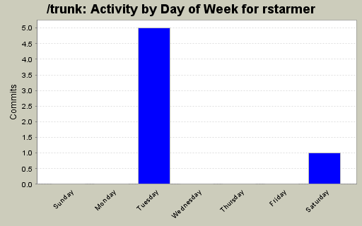
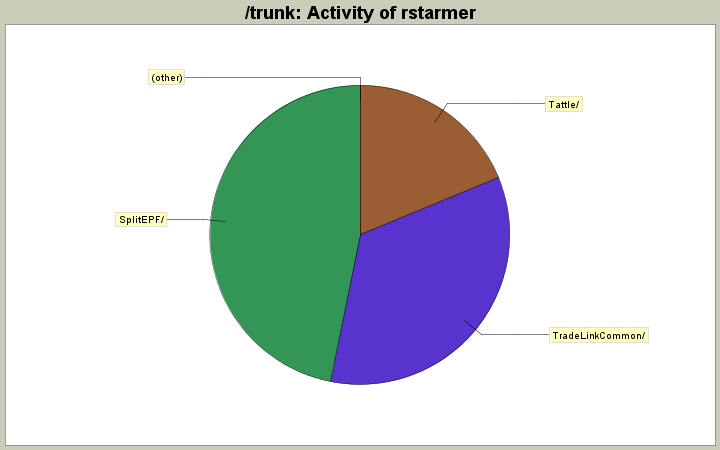

| Directory | Changes | Lines of Code | Lines per Change |
|---|---|---|---|
| Totals | 6 (100.0%) | 64 (100.0%) | 10.6 |
| SplitEPF/ | 4 (66.7%) | 30 (46.9%) | 7.5 |
| TradeLinkCommon/ | 1 (16.7%) | 22 (34.4%) | 22.0 |
| Tattle/ | 1 (16.7%) | 12 (18.8%) | 12.0 |

prior commit had an error in the "show" command
0 lines of code changed in 2 files:
Removed some remnant debugging messages.
1 lines of code changed in 1 file:
Updated to deal with an inability to read in a blank line. In addition, the date header function doesn't produce an EPF date line, so this has been modified. In addition, there is a new function to write multi-date headers (opening and closing date).
22 lines of code changed in 1 file:
Changed logic to split files. It appears as if this was more of a stub than a completed project. The project now splits files.
29 lines of code changed in 1 file:
Modified file search pattern to look for:
Responses.{ResponseName}.{date}.{time}.{Trades|Order|Indicators}.csv
Specifically only looking for Trades.csv
Also added a catch for the stream reader so that we don't break if Gauntlet is still writing to the file when Tattle sees it.
12 lines of code changed in 1 file: